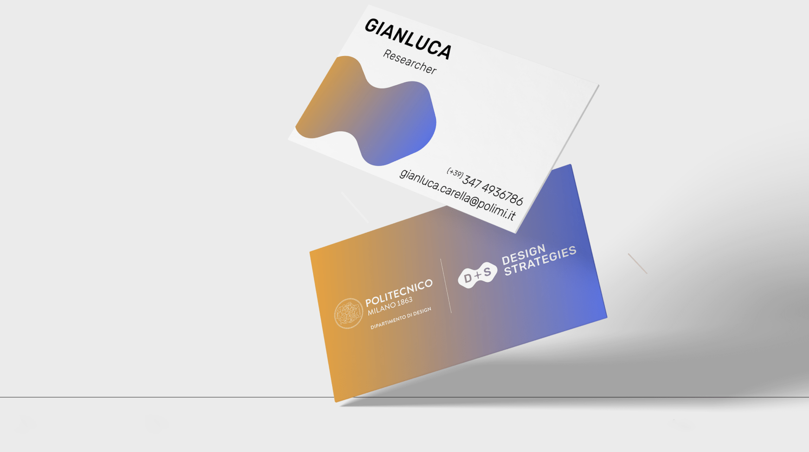
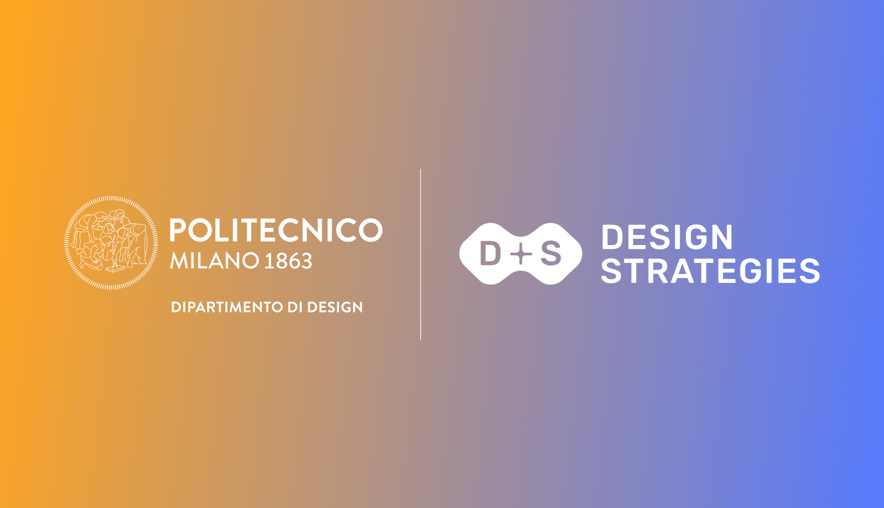
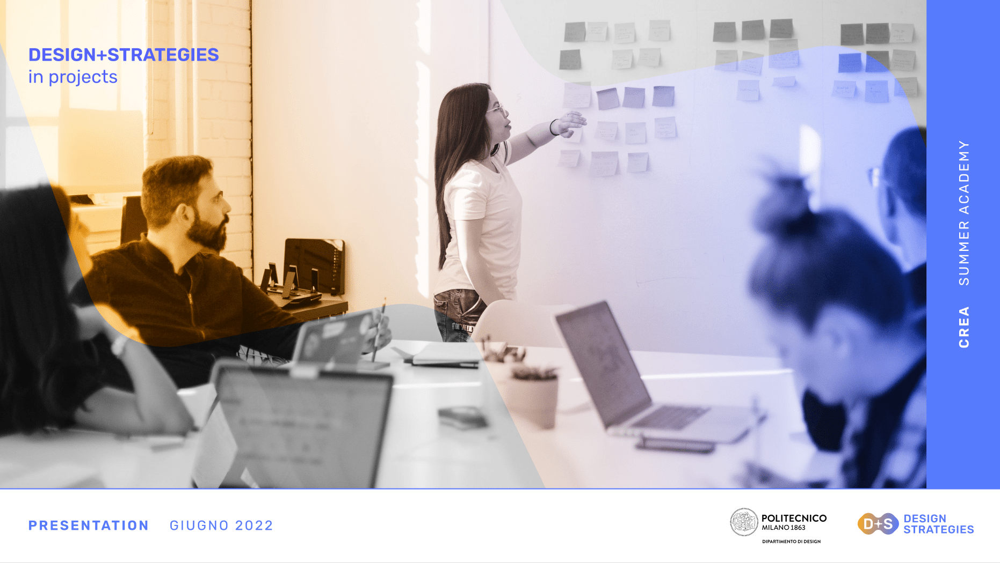
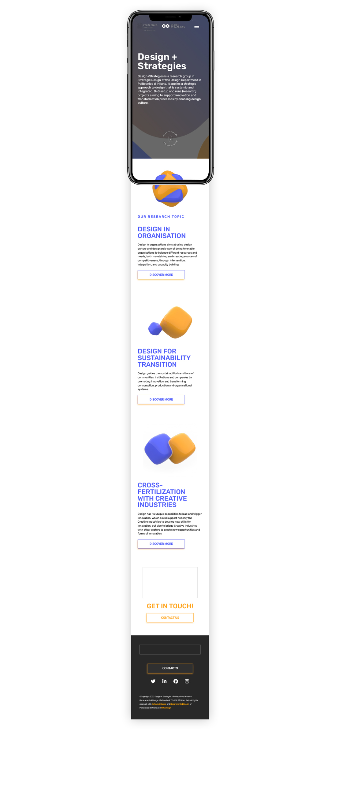
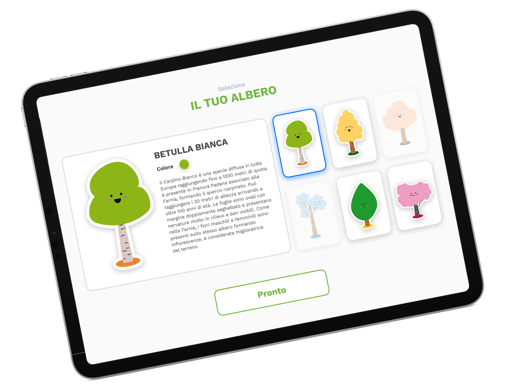
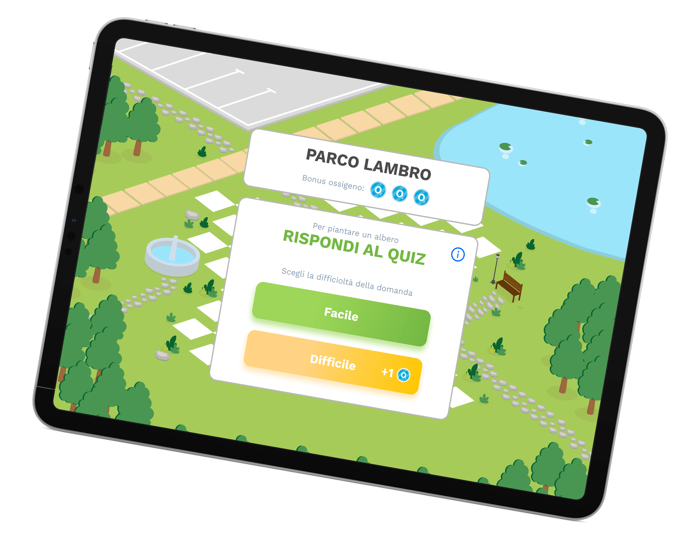
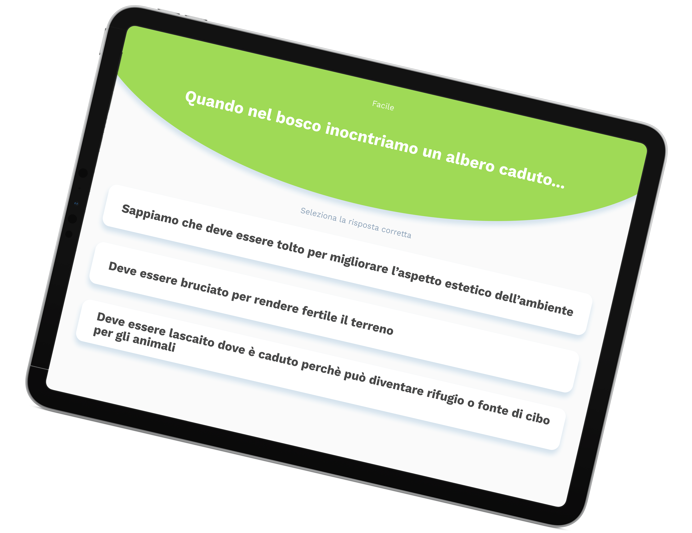
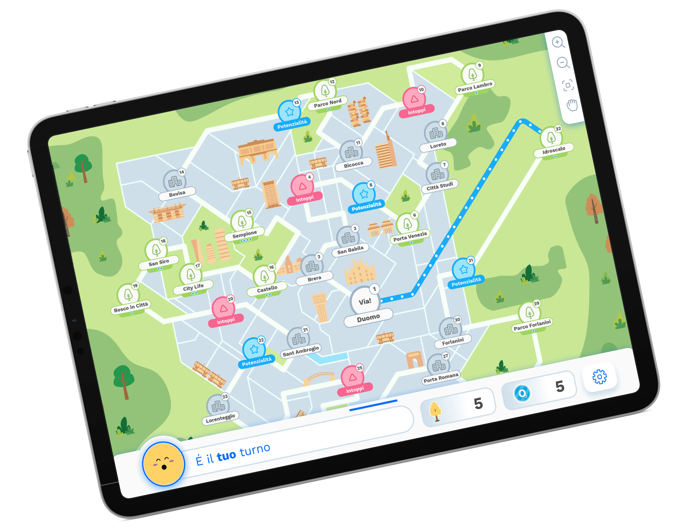

Editorial Design | Graphic Design
MASTER THESIS BOOK
“COBO: a phygital interactive toolkit for co-designing smart interactive experiences with people with Intellectual disability” is the result of an extraordinary collaboration between Politecnico di Milano and Fraternità ed amicizia onlus. The master's thesis reports the full process, starting from the preliminary phase of research and experimentation, which led to the design and development of an interactive co-design toolkit intended for cognitive-behavioral rehabilitation within therapies with people with intellectual disabilities. The toolkit contributes to the research process concerning the introduction of innovative technologies in the relationship between therapists and patients. The project also further investigate the potential associated to the development of phygital (i.e digital and physical) technologies and interfaces as a solutions capable of stimulating attention, engagement and sense of empowerment of people with intellectual disabilities by also facilitating active participation in cooperation, socialization and self-reflection processes related to indivisuals needs in relation to external environment.
Product Design | UI/UX Design | Full Stack Developing
COBO
COBO is phygital interactive toolkit for co-designing interactive outdoor experiences and intended for people with intellectual disability. The toolkit consists of an interactive board and a dedicated tablet application, with which the user can interact during all stages of the game and which is able to provide information and advice. The interactive board is able to recognize the card combinations made by users and permits to test them through a series of interactive functions, which make the effects on reproductions of the park elements visible. In COBO, next to the figure of the mayor, as the moderator of the game, a new virtual character appears, Virginia, a voice assistant able to support the player in the learning of the game and also able to guide her/him through all the various phases to the definition of the final idea.
Brand Identity | Graphic Design
STRADANOVE
STRADANOVE is a visual design project designed to convey the values and spirit of Stradanove, a virtual meeting and dialogue space for teenagers promoted by the city of Modena and Emilia-Romagna region. The project results as the winner of the public tender launched by Modena in 2020 and became the current official graphic identity of the Stradanove initiative.
Data Visualization | Graphic Design
STATE OF DECAY
“STATE OF DECAY” is a physical data visualization based on 2011 @istat_it census. The installation was part of the “Mediazioni Algoritmiche“ exhibition organized at @polimi from February to March 2020. Italy is a country with a great amount of abandoned historical buildings: architectural wonders of which only a few people know the exact location. An ISTAT census on disused buildings allows to get an idea of where these structures are more concentrated. The first step towards their rediscovery. Concrete is the perfect material to represent the reality of facts. Just as buildings are slowly eroded by time so even the blocks that represent each region are more or less eroded and in a state of degradation based on the amount of unused buildings in the region.
Product Design | UX/UI Design
GURU
GURU is an interactive speaker-lamp for parents and children that helps to establish daily routines. It's a research-oriented project, based on users needs defined through interviews, field research and surveys. The feedbacks collected has led to the conception of a user-centered project of an interactive tool that helps children to manage time and little daily activities. It's a three arrow system: a device, an app and its related website. The appearance of the device is connected to its meaning: a friendly and colorful guide for each child.
Videomaking | Graphic Design
GIUOCO DELLE PERLE DI VETRO
"Il giuoco delle perle di vetro" is a philosophical and fantastic novel written by Herman Hesse in 1943. The book tells the life of Josef Knecht: a little orphan whose skills are noted by a music teacher who i will allow you to be admitted to Castalia, a city run by an order of intellectuals only, where Knecht will reach the highest offices. In the novel the role of the game of pearls is central, an imaginary game based on mental connections between opposite opposite. This imaginary game was the starting point for the design of an accessible Booktrailer, designed to advertise a hypothetical new edition of the book. The trailer was realized through utilizing an abstract geometric imaginary made of 3D models made with Cinema 4D and After Effects. Later, an accessible version has been created for the deaf and blind through a LIS interpreter and color translation of the video music.
Photography
SOLO LA LUCE
"Solo la luce." is a photographic series that arises from the experience that, during the last years, I have lived during my travels looking for abandoned buildings throughout northern Italy, not only for photograph them but also to see those that define "forgotten architectural wonders" .These places, this silence, this absence of life where life once erected and frescoed walls , gives the feeling that, walking inside them, the light that filters from a window, from a torn roof, from a crack in the wall, it's the only presence, intangible but at the same time always present. This was the inspiration for the birth of this project, where these places are the main subject, but the same is also the light that, between these rooms, these forgotten spaces, takes human shape, elegant and luminous, remaining a part of the enviroment, part of a balance of light and shadow that born and dies every day.
UX/UI Design | Graphic Design
LIGHTDROP
Lightdrop is a social network that aims to connect users with common interests to carry out activities in real life. The app is based on activities: activities created by users and in which anyone can participate, anytime and at any time, thus creating an immediate link between the virtual world and the real one. The work carried out aimed at improving the graphic identity and the creation of the startup pitch, which was subsequently used during calls and events with investors. At the same time, the user interface of the application was developed in close contact with the CEO and programmers.
UX/UI Design | Graphic Design | Web Developing
LEMONSODA
The project started from the brand's request for a new interface for the official website, to better adapt to the identity and communication objectives. The interactiove prototype of the website was then created in desktop and mobile versions following the guidelines provided by the brand.
Graphic design | Data Visualization | Web Developing
TRACES OF THE NEW
GOLD RUSH
In 2008 Satoshi Nakamoto published the paper Bitcoin: A Peer-to-Peer Electronic Cash System anticipating the invention of a decentralized and totally transparent form of electronic cash, based on the blockchain structure. After Bitcoin, an increasing number of cryptocurrencies have come, but people are still not aware that there is a huge amount of complex mechanisms behind blockchain. Moreover, the environmental impact of cryptocurrencies is the real elephant in the room.
The classical digital payments methods are globally accepted despite their necessity of a centralized controller represented by banks. The gradual loss of trust in these institutions, new decentralized transaction system to exchange money. The visualization represents the last two years of cryptocurrencies’ financial history highlighting their carbon footprints emissions.
Graphic design | Data Visualization | Web Developing
MEMETIC WARFARE ARCHIVE
Propaganda has been a tool that allowed governments to persuade people to believe in different ideas through ages. Today propaganda can be melted with a psychological warfare based on the propagation of memes on social medias and the gears of this machine are quite invisible.
"Memetic warfare is about taking control of the dialogue, narrative, and psychological space. It is about denigrating, disrupting, and subverting the enemy’s effort to do the same. We must prepare for the worst, and view it as an opportunity as well as a threat."
The aim of the website is to collect and cluster all the memes shared on a specific subreddit during an internationally significant phenomenon, to understand their language and purpose. We want to inform not only who has no knowledge about memetic warfare but also the people that, despite their consciousness, are not aware of the links between the classic techniques of propaganda and Memetic Warfare.
Brand Indentity | UX/UI Design | Full Stack Developing
Design+Strategies
The Design+Strategies website is a comprehensive platform developed for the research group at Politecnico di Milano. The group specializes in Strategic Design, which involves a systemic and integrated approach to design that supports innovation and transformation processes. The website serves as a hub for the group's research projects and aims to enable design culture.
The website features a sleek and modern design that reflects the group's commitment to innovative design practices. It is easy to navigate and provides users with quick access to the latest research and project updates. The research area is divided into different sections, each focusing on a specific area of strategic design. Each section contains detailed information about the group's ongoing projects and research initiatives.




UX/UI Design | Game Design
PiantaLa
Piantala is an engaging and interactive digital game that combines entertainment with a sense of purpose. The game's quiz structure challenges players to answer questions correctly and earn CO2 coins, which can be used to plant trees. Piantala also offers a multiplayer option, allowing players to compete with others and test their knowledge. By combining fun gameplay with a commitment to environmental sustainability, Piantala offers a unique and enjoyable experience that is sure to captivate players and leave a lasting impression.



